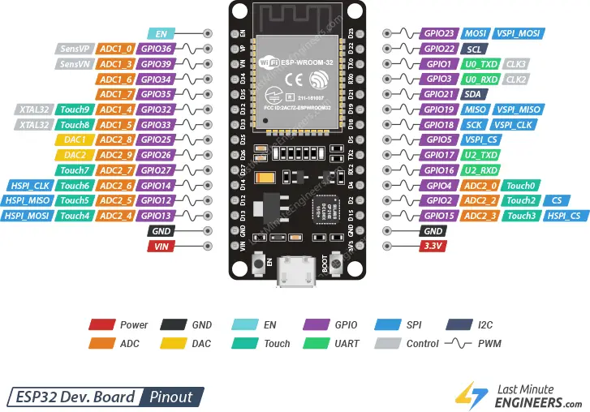
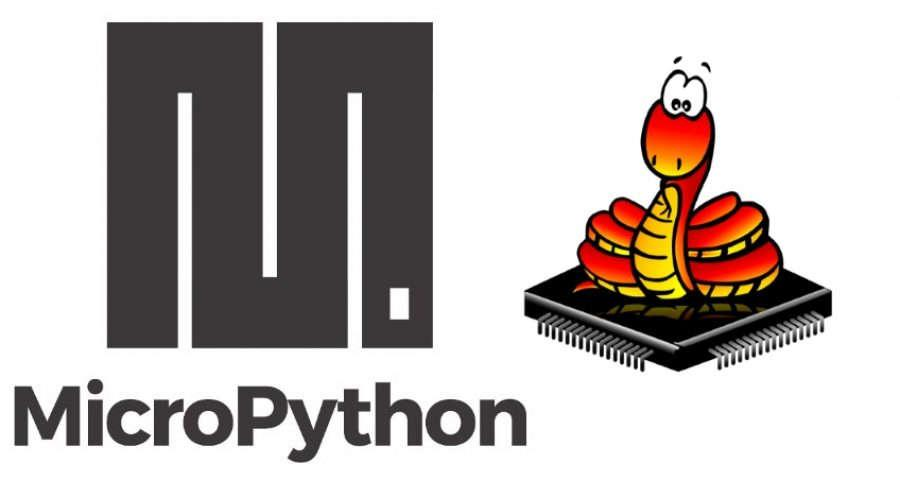
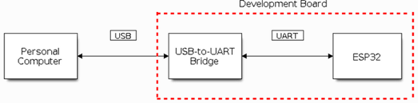
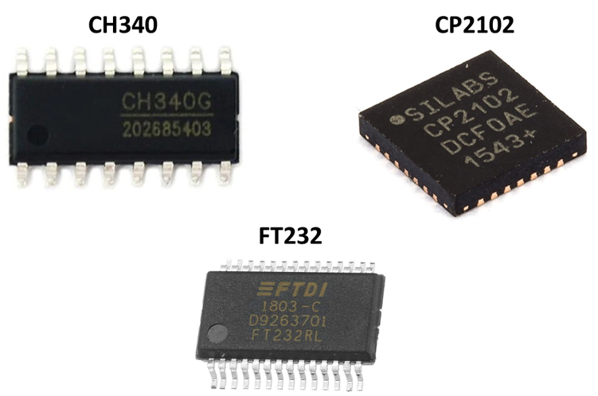
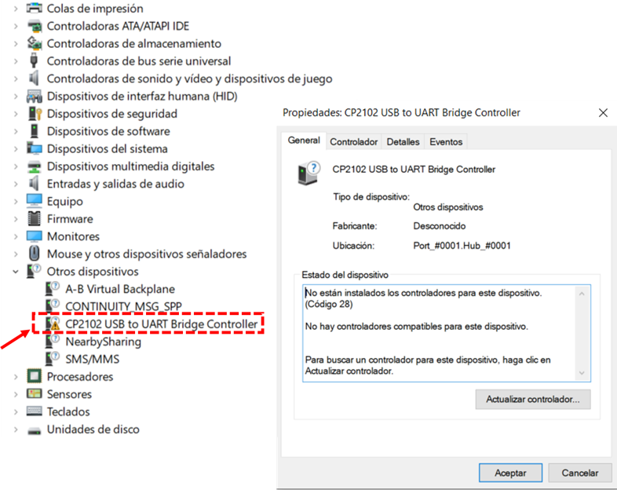
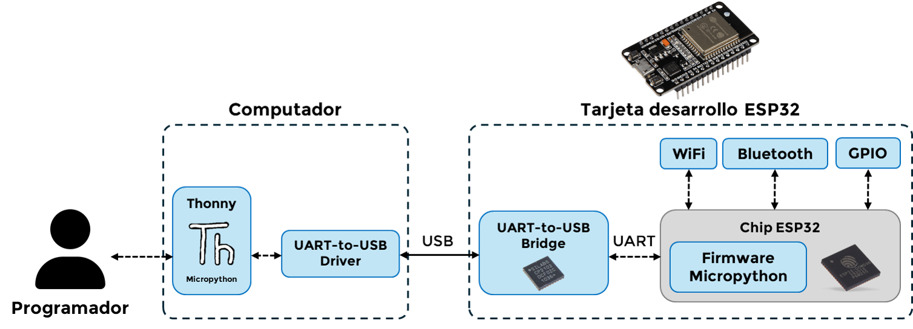

3.1. Introducción al ESP32 y MicroPython
El desarrollo de soluciones basadas en el Internet de las Cosas (IoT) requiere herramientas que combinen flexibilidad, eficiencia y facilidad de programación. El ESP32 y el lenguaje MicroPython representan una poderosa combinación para este propósito. Este submódulo tiene como objetivo introducir los fundamentos teóricos necesarios para comprender qué es el ESP32, cómo se programa con MicroPython, y qué herramientas se requieren para comenzar.
¿Qué es el ESP32?
El ESP32 es un microcontrolador de arquitectura RISC de 32 bits desarrollado por la empresa Espressif Systems. Se trata de un SoC (System on Chip) diseñado especialmente para aplicaciones de bajo consumo energético y alto rendimiento. Incorpora un procesador Xtensa LX6 de uno o dos núcleos que puede operar hasta a 240 MHz, lo que le otorga capacidades superiores a muchos otros microcontroladores populares en el ámbito educativo e industrial.
Una de sus principales fortalezas es la integración de conectividad inalámbrica Wi-Fi (802.11 b/g/n) y Bluetooth (v4.2 BR/EDR y BLE), lo que lo convierte en un candidato ideal para proyectos de automatización, domótica, monitoreo ambiental, y sistemas distribuidos sin necesidad de componentes adicionales para la comunicación.

El ESP32 también cuenta con múltiples periféricos integrados, como:
- Hasta 34 pines GPIO configurables.
- Conversores analógico-digital (ADC) y digital-analógico (DAC).
- Sensores táctiles capacitivos.
- Interfaz PWM para control de motores y brillo de LEDs.
- Módulos de comunicación como UART, SPI, I2C, CAN y más.
Ventajas del ESP32 para el IoT
El ESP32 presenta una serie de ventajas que lo hacen atractivo para aplicaciones IoT:
- Conectividad integrada: Wi-Fi y Bluetooth en un solo chip.
- Procesador potente: con capacidad para ejecutar múltiples tareas o controlar dispositivos en tiempo real.
- Bajo consumo energético: cuenta con varios modos de ahorro de energía, incluyendo deep sleep.
- Versatilidad de entradas y salidas: gran número de pines, compatibilidad con múltiples protocolos de comunicación.
- Amplia documentación y comunidad: soporte disponible en múltiples lenguajes y plataformas.
- Costo accesible: relación calidad-precio superior a muchas alternativas comerciales.
Estas características lo convierten en una plataforma ideal tanto para quienes se inician en la electrónica como para desarrolladores que buscan soluciones escalables.
¿Por qué elegir ESP32 frente a otras tarjetas de desarrollo?
Existen diversas tarjetas de desarrollo en el mercado como Arduino Uno, STM32, Raspberry Pi Pico, entre otras. Si bien todas tienen sus ventajas, el ESP32 se destaca en el contexto de IoT por su balance entre potencia, conectividad y costo.
A continuación, se presenta una comparación resumida:
- Arduino Uno: aunque es muy popular y fácil de usar, no cuenta con conectividad inalámbrica integrada y tiene un microcontrolador con menor capacidad de procesamiento (8 bits, 16 MHz).
- STM32: ofrece potencia similar o superior en ciertas versiones, pero su ecosistema es más complejo para principiantes, y requiere entornos de desarrollo más avanzados como STM32CubeIDE.
- Raspberry Pi Pico: si bien es económico y potente, no incluye conectividad inalámbrica de forma nativa y requiere módulos externos para Wi-Fi o Bluetooth.
El ESP32, por otro lado, combina lo mejor de todos estos mundos:
- Tiene potencia de procesamiento considerable.
- Ofrece conectividad Wi-Fi y Bluetooth de forma integrada.
- Cuenta con soporte para múltiples lenguajes de programación, incluyendo MicroPython, C++, Lua, entre otros.
- Es accesible económicamente y ampliamente distribuido.
En conclusión, para proyectos de IoT que requieran bajo consumo, conectividad inalámbrica y facilidad de desarrollo, el ESP32 representa una de las mejores opciones disponibles actualmente.
¿Qué es Micropython?
Como dice su documentación oficial, MicroPython es una implementación eficiente y reducida del lenguaje Python 3, diseñada específicamente para funcionar en microcontroladores. Permite escribir programas en un lenguaje de alto nivel que es fácil de entender, facilitando así el desarrollo rápido de prototipos y la enseñanza de conceptos básicos de programación.
MicroPython incluye una selección de módulos similares a los de Python estándar (como math, time, json) y otros específicos para controlar hardware embebido como machine (para GPIO, ADC, DAC), network (para conectividad Wi-Fi y Bluetooth), y utime (temporización).
Su sintaxis simple y su integración con plataformas como ESP32 han impulsado su uso en entornos educativos y en la creación de soluciones rápidas para IoT. A diferencia de entornos como Arduino IDE (C/C++), MicroPython permite desarrollar en menos líneas de código, con menor complejidad y más legibilidad.

¿Qué es el firmware MicroPython?
Para que el ESP32 pueda ejecutar programas escritos en MicroPython, es necesario instalar previamente un firmware específico. El firmware MicroPython es un archivo binario que contiene el intérprete del lenguaje y los módulos necesarios para acceder al hardware del microcontrolador.
Este firmware reemplaza cualquier otro sistema que pudiera estar instalado previamente, como el de Arduino. Una vez cargado, el ESP32 podrá recibir scripts .py y ejecutarlos directamente desde su memoria interna o desde un entorno como Thonny.
¿Qué es Thonny?
Thonny es un entorno de desarrollo integrado (IDE) liviano y diseñado para quienes aprenden a programar. Desarrollado por la Universidad de Tartu, es ampliamente utilizado en el ámbito educativo por su simplicidad.
Para MicroPython, Thonny ofrece funcionalidades muy útiles:
- Reconocimiento automático del puerto serial donde está conectado el ESP32.
- Consola interactiva (REPL) para ejecutar instrucciones en tiempo real.
- Subida de scripts directamente a la memoria del microcontrolador.
- Interfaz intuitiva para elegir el intérprete MicroPython/ESP32.
Estas características hacen de Thonny una excelente opción para estudiantes y entusiastas que desean comenzar a programar microcontroladores sin complicaciones.
¿Qué es el USB to UART Bridge?
Los microcontroladores como el ESP32 se comunican internamente usando el protocolo UART (Universal Asynchronous Receiver-Transmitter), una forma simple de transmitir datos seriales. Sin embargo, la mayoría de los computadores modernos no poseen puertos UART y solo ofrecen puertos USB.
Aquí es donde entra el USB to UART Bridge: es un chip integrado en la placa del ESP32 que convierte la señal USB del computador en una señal UART que el ESP32 puede entender. Entre los más comunes están:
- CP2102
- CH340
- FTDI FT232RL
Sin este puente, no sería posible programar la placa ni establecer comunicación serial.

Hay varias referencias de chips USB-UART usados en las tarjetas de desarrollo ESP32 (SILABS CP2102, CH340G, FT232 etc.). En primera instancia se debe determinar cuál es el chip usado en la tarjeta de desarrollo que se posee. Hay dos métodos:
- Inspección visual: Se puede examinar la tarjeta de desarrollo y determinar que chips posee

- Administrador dispositivos: Si se conecta al ordenador el ESP32 y no se tiene instalado el driver correspondiente, entonces
esté será reconocido como un dispositivo con un signo de advertencia, cuyo significado radica en que no se tiene instalado
su respectivo driver-controlador.

¿Qué es el Driver USB to UART?
Para que el sistema operativo reconozca correctamente el chip USB to UART de la placa ESP32, es necesario instalar un driver. Este software actúa como intermediario entre el sistema y el chip de la placa.
En muchos casos, especialmente en Windows, el driver no está incluido por defecto y debe descargarse desde la página del fabricante del chip. Si el driver no está instalado, el ESP32 no aparecerá en el listado de puertos disponibles y no podrá ser programado desde Thonny u otro IDE.
Una vez instalado el driver correcto, el puerto COM aparecerá y se podrá establecer la conexión sin problemas.
Resumen
A lo largo de este submódulo se han presentado los principales elementos necesarios para trabajar con el ESP32 y MicroPython. Desde el hardware hasta el entorno de desarrollo, cada componente cumple un rol clave en la creación de aplicaciones IoT.
El usuario, a través del computador, utiliza un IDE como Thonny para escribir y cargar programas. Estos programas están escritos en MicroPython, un lenguaje interpretado cuyo firmware debe estar previamente instalado en el ESP32. Para que el computador pueda comunicarse con la placa, se requiere un chip USB to UART Bridge, el cual necesita un driver compatible instalado en el sistema operativo.

Esta arquitectura modular permite que el estudiante comprenda el ciclo completo: desde la escritura del código hasta su ejecución en un microcontrolador, facilitando la comprensión de las bases del IoT y su implementación práctica.